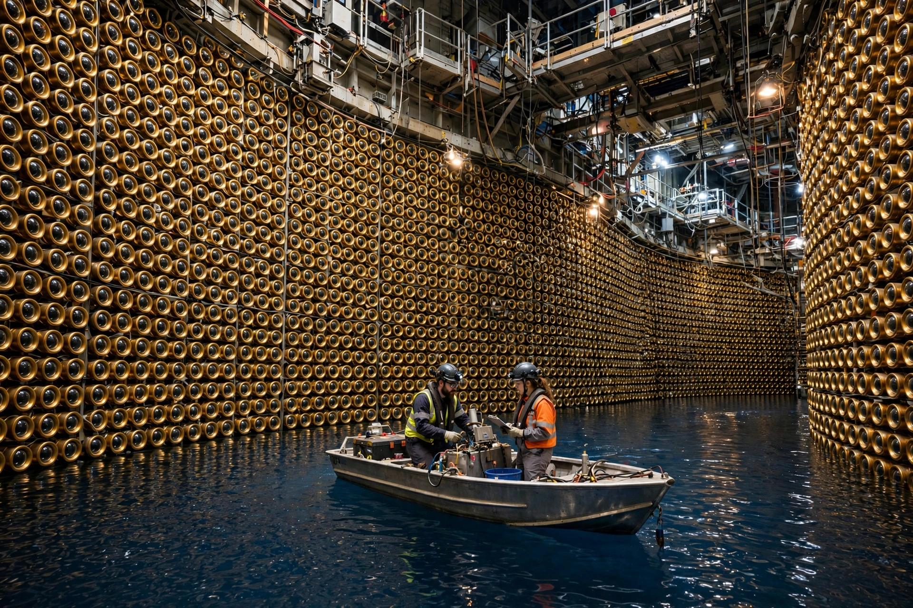

| Super-Kamiokande | |
|---|---|
 | |
| Location | Kamioka mine, Hida, Gifu, Japan (1,000 m underground) |
| Type | Water Cherenkov neutrino detector |
| Water mass | 50,000 tonnes |
| Sensors | ~11,200 photomultiplier tubes (inner detector) |
| Began operation | 1996 |
| Operator | Institute for Cosmic Ray Research, University of Tokyo |
Super-Kamiokande (Super-Kamioka Neutrino Detection Experiment) is a neutrino observatory located under Mount Ikeno in the Kamioka mine near Hida, Gifu Prefecture, Japan. The detector is a cylindrical stainless-steel tank about 39 metres in diameter and 42 metres tall, filled with 50,000 tonnes of ultra-pure water and lined with roughly 11,200 photomultiplier tubes that detect the faint Cherenkov light produced when a neutrino interacts in the water. It sits a kilometre underground to shield it from cosmic rays.
In 1998 the Super-Kamiokande collaboration announced the first strong evidence for neutrino oscillation, showing that atmospheric muon neutrinos — many of them created by cosmic-ray interactions similar to those studied with high-energy physics — disappear as they travel through the Earth, implying that neutrinos have mass. The result underpinned the 2015 Nobel Prize in Physics awarded to Takaaki Kajita (with Arthur McDonald of SNO). The detector confirmed the oscillation of solar neutrinos, observed neutrinos from the T2K long-baseline experiment fired from Tokai 295 km away, and set leading limits on proton decay. It also serves as an early-warning observatory for supernova neutrinos, building on its predecessor Kamiokande, which detected neutrinos from supernova SN 1987A.
Super-Kamiokande began data-taking in 1996, succeeding the smaller Kamiokande detector. In November 2001, during refilling after maintenance, a chain reaction of imploding photomultiplier tubes destroyed over half of them; the detector was rebuilt with protective shells and full operation resumed by 2006. In 2020 the water was loaded with gadolinium sulfate to improve neutron detection (the SK-Gd phase), and the much larger Hyper-Kamiokande is under construction nearby.